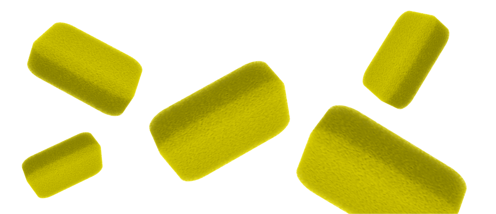
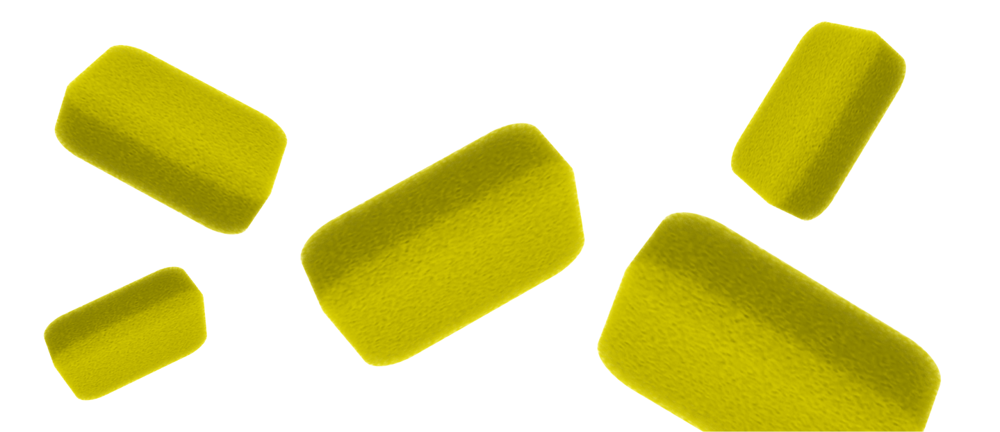

Бытовые губки и их замена
 

Факты:
Название
Губка
Вред
Провоцирует инфекции
Решение
Регулярная замена
Важно!
*Бытовая губка может быть источником бактерий и микробов,
если ее не заменять регулярно.
Бытовые губки
Бытовая губка - это часто использующийся предмет на кухне. Мы
используем ее для мытья посуды, столовых приборов и других
поверхностей в нашем доме. Однако, несмотря на все ее
преимущества, бытовая губка имеет и некоторые негативные
свойства.
Негативные свойства губки
Во-первых, губка может быть источником бактерий и микробов.
После использования губки на ней остаются остатки пищи
и грязи, которые становятся средой обитания для бактерий.
Если губка не заменяется регулярно, то она может стать
причиной различных инфекций. Во-вторых, губка может повредить
поверхности. Она может повредить керамическую плитку, стеклянные
поверхности и другие материалы.
На что заменить?
Существует несколько альтернатив, которые можно использовать вместо
губки:
Микрофибровые тряпки — они хорошо справляются с очисткой
и не повреждают поверхности.
Специальные скребки — они предназначены для удаления стойких
пятен и загрязнений.
Бамбуковые щетки — они мягко очищают поверхности и хорошо
подходят для мытья посуды.
Губки из меламина — они отлично справляются с удалением пятен
и загрязнений и не повреждают поверхности.
МЫ В СОЦ СЕТЯХ